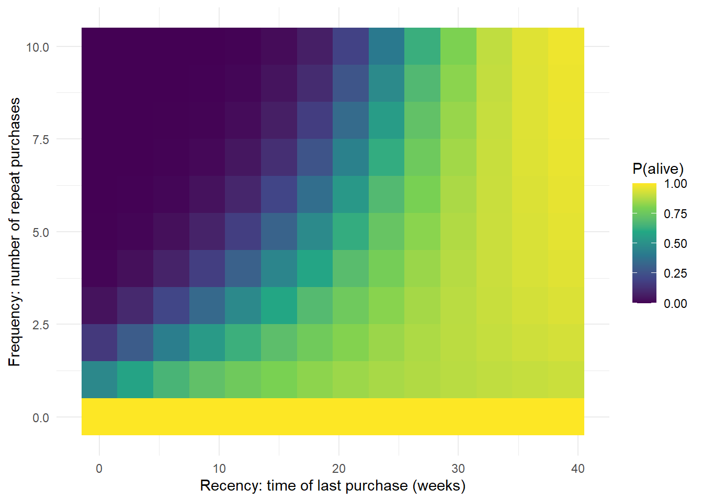
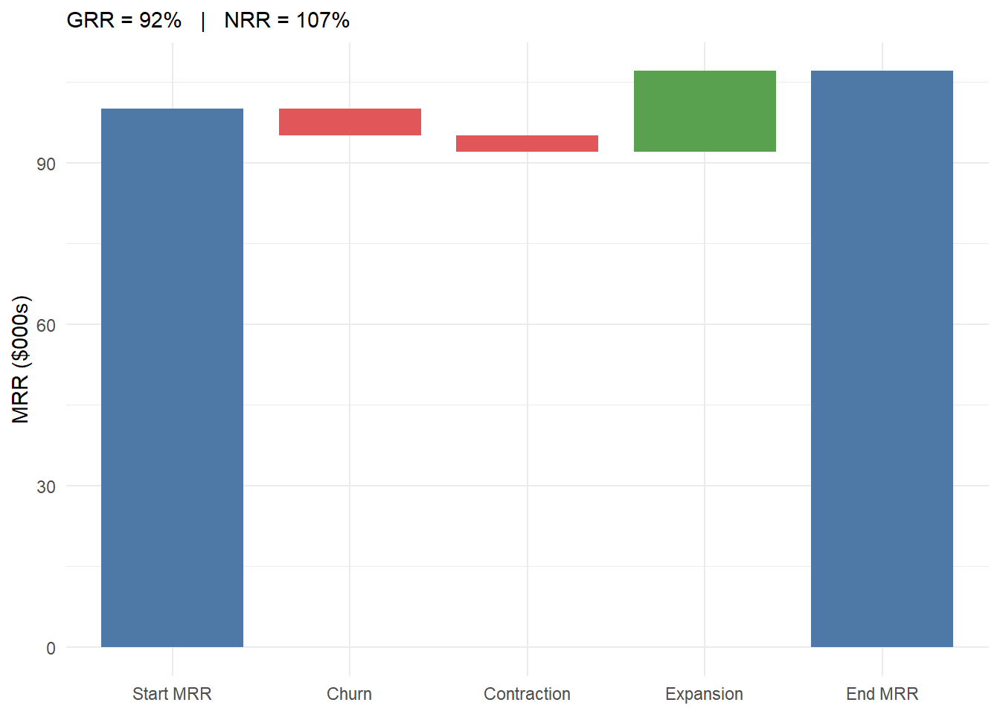

flowchart TD
Q1{"Is churn observed?<br/>(contractual setting)"}
Q1 -->|"yes: subscriptions,<br/>insurance, B2B SaaS"| Q2{"Purchase opportunities<br/>in discrete periods?"}
Q1 -->|"no: retail, e-commerce,<br/>direct-to-consumer"| Q3{"Purchase opportunities<br/>in discrete periods?"}
Q2 -->|"discrete"| M1["sBG for retention;<br/>BG/BB for transactions"]
Q2 -->|"continuous"| M2["Survival models on time-to-churn<br/>(exponential, Weibull, Cox)"]
Q3 -->|"discrete"| M3["BG/BB"]
Q3 -->|"continuous"| M4["Pareto/NBD, BG/NBD,<br/>Gamma-Gamma"]
15 Customer Lifetime Value
Customer lifetime value (CLV), often called lifetime value (LTV) in practice, is the present value of the future cash flows a firm expects to earn from a customer relationship over its remaining duration. It reframes the customer from a transaction into an asset: the question is no longer “what did this person buy today?” but “what is this relationship worth, net of the cost of sustaining it, for as long as it lasts?” That shift in unit of analysis is the conceptual core of customer-centric marketing. Once customers are assets, acquisition becomes a capital budgeting decision, retention becomes asset maintenance, and the firm’s total customer base aggregates into customer equity, a balance-sheet-style summary of the demand side of the business (Rust, Lemon, and Zeithaml 2004; Gupta et al. 2006).
CLV matters for two reasons that map onto the book’s two audiences. Scientifically, it forces an explicit stochastic model of three primitives (how long a customer stays (retention or survival), how often and how much they buy (transaction flow and spend), and how those translate into margin net of marketing cost) each of which is a latent process observed only through noisy transaction data. Commercially, CLV is the metric that allocates acquisition budget, prioritizes service, sizes loyalty programs, and, when aggregated, has been shown to track shareholder value (Gupta et al. 2006; Kumar et al. 2010b; Kumar and Shah 2009). A practitioner heuristic captures the stakes: a single year’s projected business typically recovers only about half of a customer’s full lifetime value, a ratio that varies widely by industry. Truncating the horizon at one year therefore discards roughly half the asset.
This chapter builds CLV from both ends. It leads with the way value is computed in production (the unit-economics formulas, the company-type playbooks, and the pipeline that turns a data warehouse into a per-customer number) and grounds that practice in the classical models that explain when the production shortcuts are safe and when they are biased. It defines the construct formally, lays out the contractual versus non-contractual taxonomy that decides which model class is even admissible, and then develops, with reproducible code, the four modeling traditions in turn: the probabilistic “buy-till-you-die” family, the econometric and hierarchical-Bayes extensions, the machine-learning and deep-learning frontier, and the causal/decision-focused layer that asks not what CLV is but how to act on it. It covers the full set of adjacent constructs (customer equity, CAC, the LTV:CAC ratio and payback, net and gross revenue retention, RFM, churn, share of wallet, customer referral value, customer-based corporate valuation, and negative CLV) and closes on the identification problems that make CLV easy to compute and hard to compute correctly.
15.1 The Construct and Its Assumptions
Fix a customer \(i\) and let periods be indexed by \(j\) (annual or semiannual). Three latent quantities drive value: the probability \(p(\text{Buy}_{ij}=1)\) that the customer is active and transacts in period \(j\); the contribution margin \(\text{CM}_{ij}\) the customer generates conditional on transacting; and the marketing cost \(\text{MC}_{ij}\) the firm directs at the customer to keep the relationship alive. Future cash flows are discounted at a per-period rate \(r\). Writing \(T\) for the end of the observation (calibration) window and \(N\) for the number of periods projected forward, the discounted-margin definition of CLV is
\[ \text{CLV}_i \;=\; \sum_{j=T+1}^{T+N} \frac{p(\text{Buy}_{ij}=1)\,\widehat{\text{CM}}_{ij}}{(1+r)^{\,j-T}} \;-\; \sum_{j=T+1}^{T+N} \frac{\widehat{\text{MC}}_{ij}}{(1+r)^{\,j-T}} . \tag{15.1}\]
Equation 15.1 is the formulation popularized in the customer-equity program of Kumar and colleagues (Kumar et al. 2008; Kumar et al. 2010b). Several features deserve emphasis because they are routinely elided in practice. The summation starts at \(j=T+1\): CLV is a forward-looking quantity, the value of the relationship from today onward, not the historical revenue already booked.1 The purchase probability, contribution margin, and marketing cost are all predicted (\(\widehat{\,\cdot\,}\)), so CLV inherits the sampling error of three separate forecasting models. And the discount factor must be expressed at the period frequency of the data: a 15% annual rate corresponds to a semiannual factor of \(r \approx 0.07238\), since \((1.07238)^2 \approx 1.15\) (Kumar et al. 2008).
Customer lifetime value. The present value of all future cash flows attributable to the relationship with a customer (margin from the customer’s own purchases, net of the marketing cost of serving and retaining them) over the expected remaining lifetime of that relationship.
A useful special case exposes the economics. Suppose margin per active period is a constant \(m = \text{CM} - \text{MC}\) and the customer is retained from one period to the next with constant probability \(\rho\) (the retention rate). Then the expected discounted value of an infinite-horizon relationship collapses to a geometric series,
\[ \text{CLV} \;=\; m \sum_{t=0}^{\infty} \left(\frac{\rho}{1+r}\right)^{t} \;=\; m \,\frac{1+r}{\,1+r-\rho\,}, \tag{15.2}\]
valid whenever \(\rho < 1+r\). The factor \((1+r)/(1+r-\rho)\) is the margin multiple: at \(\rho = 0.8\) and \(r = 0.1\) it equals \(1.1/0.3 \approx 3.67\), so a loyal customer is worth roughly three and two-thirds years of current margin. Two modeling decisions are buried in Equation 15.2 and matter enormously: the constancy of \(\rho\) (real retention curves are not memoryless, as later sections show) and the choice of horizon (the infinite sum versus a finite \(N\)). Both are where naive CLV estimates go wrong. The closed-form CLV expressions of the managerial tradition, of which Equation 15.2 is the simplest, descend from Berger and Nasr (1998).
15.1.1 Two Traditions and a Taxonomy
The literature splits into complementary approaches to operationalizing Equation 15.1, summarized in Table 15.1. The managerial tradition predicts the components (purchase incidence, margin, marketing cost) with separate regression or machine-learning models, typically on a contractual or panel-with-covariates dataset, and is the workhorse of the customer-equity literature (Kumar et al. 2008; Kumar et al. 2010b; Gupta et al. 2006; Venkatesan and Kumar 2004). The probabilistic tradition instead posits a small generative model for the latent purchase and dropout processes and derives expected value in closed form; its canonical members are the Pareto/NBD and BG/NBD “buy-till-you-die” models for non-contractual settings (Schmittlein, Morrison, and Colombo 1987; Fader, Hardie, and Lee 2005a) and the shifted-beta-geometric (sBG) model for discrete-time contractual settings (Fader and Hardie 2007). A third, structural strand models the customer’s underlying utility and budget constraint and derives CLV as an implication of choices (Sunder, Kumar, and Zhao 2016), trading tractability for behavioral fidelity.
| Dimension | Managerial / component models | Probabilistic models |
|---|---|---|
| What is modeled | Each cash-flow component separately | Latent purchase + dropout processes |
| Typical data | Contractual or covariate-rich panel | Recency-frequency transaction logs |
| Covariates | Rich (demographics, marketing) | Few or none |
| Output | Per-customer point forecast | Posterior expected value |
| Strengths | Targeting, what-if on marketing | Parsimony, honest uncertainty |
| Weakness | Many models to maintain and validate | Hard to attach drivers/covariates |
Which tradition is even admissible is decided by a single two-by-two taxonomy, shown in 2, that organizes the entire field. The first axis is whether the setting is contractual (the firm observes exactly when a customer leaves: subscriptions, insurance, B2B SaaS) or non-contractual (the customer can lapse silently and churn is never directly observed: retail, e-commerce, direct-to- consumer). The second axis is whether purchase opportunities arrive in discrete periods or in continuous time (Fader and Hardie 2009). The chapter’s sBG model occupies the contractual-discrete cell; the buy-till-you-die models occupy the non-contractual cells.
| Discrete time | Continuous time | |
|---|---|---|
| Contractual (churn observed) | shifted-beta-geometric (sBG) for retention; BG/BB for transactions | survival models (exponential, Weibull, Cox) on time-to-churn |
| Non-contractual (churn latent) | BG/BB | Pareto/NBD, BG/NBD, Gamma-Gamma |
Figure 15.1 recasts the same taxonomy as the sequence of questions an analyst answers before any estimation begins.
Figure 15.2 shows how the pieces compose, from raw transactions through a latent survival process to a discounted, aggregated customer-equity figure.
flowchart LR A[Transaction /<br/>retention data] --> B[Estimate latent<br/>survival process] B --> C[Project retention<br/>over horizon N] M[Margin & cost<br/>process] --> D C --> D[Discount expected<br/>per-period cash flows] D --> E[CLV per customer] E --> F[Aggregate:<br/>customer equity]
15.2 CLV in Industry Practice
Academic CLV and operational LTV diverge sharply. In production, the formula a company uses is dictated by its business model and its data, and most LTV is computed with far cruder tools than the journals describe, which is exactly why the production pitfalls catalogued below recur. We lead with practice because it motivates everything that follows: each classical model in the later sections exists to repair a specific failure of the naive production formula.
15.2.1 The Formulas Practitioners Actually Use
The single most widely used LTV formula, ubiquitous in SaaS and subscription businesses, is
\[ \text{LTV} \;=\; \frac{\text{ARPA} \times \text{gross margin \%}}{\text{churn rate}}, \tag{15.3}\]
where ARPA is average revenue per account per period and \(1/\text{churn}\) is the implied (geometric) expected lifetime. Equation 15.3 is exactly the chapter’s Equation 15.2 with \(r=0\) and constant retention \(\rho = 1 - \text{churn}\). Its appeal is that it needs only two numbers off a dashboard. Its dangers are four. First, it assumes a single constant churn rate, but real retention curves flatten with tenure (the sorting effect formalized by the sBG model in Section 15.3), so it underestimates the value of survivors. Second, it divides by churn, so as churn approaches zero the estimate explodes: a firm that improves monthly churn from 2% to 1% sees its headline LTV double, an artifact of the functional form rather than a real doubling of value. Third, it ignores discounting. Fourth, it ignores expansion revenue, so for any business with net revenue retention above 100% (defined in Section 15.2.2) it understates value badly.
The correct version is the discounted, cohort-based form, identical to the Equation 15.9 derived later: sum the per-period margin weighted by the survivor function \(S(t)\) and discounted at the period rate. Most companies should use this and do not.
Above the customer level sit the board-room unit-economics ratios that govern whether a growth model is solvent:
- CAC (customer acquisition cost) is total sales-and-marketing spend in a period divided by new customers acquired.
- The LTV:CAC ratio compares the value of an acquired customer to the cost of acquiring them. A common venture heuristic treats \(\geq 3{:}1\) as healthy, below \(1{:}1\) as losing money on every customer, and much above \(5{:}1\) as a sign of under-investment in growth.
- The CAC payback period is CAC divided by monthly margin per customer, the number of months to recoup acquisition cost; under twelve months is a frequent SaaS target.
These ratios carry no academic DOI; they are practitioner and venture-capital heuristics, but they are how acquisition budgets are actually defended. Section 15.11 computes them from simulated cohorts.
15.2.2 SaaS Retention Metrics: Logo versus Dollar, Gross versus Net
Subscription businesses report retention at the cohort level along two crossed distinctions. The first is logo (customer count) retention versus dollar retention: a firm can lose many small logos yet grow dollars if its surviving accounts expand, or the reverse. The second is gross versus net. Gross revenue retention (GRR) is
\[ \text{GRR} \;=\; \frac{\text{start MRR} - \text{churn} - \text{contraction}}{\text{start MRR}}, \tag{15.4}\]
which measures pure leakage and is capped at 100%. Net revenue retention (NRR, also net dollar retention) adds expansion (upsell, seat growth, cross-sell) back in:
\[ \text{NRR} \;=\; \frac{\text{start MRR} - \text{churn} - \text{contraction} + \text{expansion}}{\text{start MRR}}, \tag{15.5}\]
and can exceed 100%. NRR above 100% means the existing customer base grows without any new logos, which is why it is the single most-watched metric in subscription software. A firm with NRR of 120% needs no new customers to grow 20% a year; a firm with NRR of 85% is on a treadmill, replacing a churning base just to stand still. Figure 15.8 renders the expansion-versus-churn waterfall that produces an NRR above 100%.
15.2.3 A Company-Type Playbook
The admissible model and the operating metric both depend on the business model. Table 15.3 is the cross-industry map.
| Company type | Contract? | Data | How CLV is computed in production | Typical tooling |
|---|---|---|---|---|
| SaaS / B2B subscription | Contractual | Billing/CRM, MRR by cohort | Cohort retention curves plus NRR/GRR; LTV:CAC and payback; sometimes sBG or survival on logo churn. Boards see unit economics, not per-customer CLV. | dbt/SQL cohorts; lifelines; spreadsheets |
| E-commerce / DTC | Non-contractual | Order logs (id, date, amount) | BTYD: BG/NBD for transactions plus Gamma-Gamma for spend yields per-customer pLTV, feeding segmentation and paid-acquisition bids. | R CLVTools/BTYD; Python lifetimes; two-stage ML |
| Retail / CPG | Non-contractual | Loyalty-card panels, basket data | Panel or loyalty BTYD, or structural CLV (Sunder, Kumar, and Zhao 2016); share of wallet; category CLV. Hard without identified customers. | Panel econometrics; hierarchical Bayes; warehouse |
| Telecom / insurance / banking | Contractual | Tenure, usage, claims | Survival or churn models (Cox, gradient boosting, survival forests) yield a retention curve, then discounted CLV; uplift for save-desk targeting. |
survival/lifelines; XGBoost; SAS |
| Mobile gaming / apps | Non-contractual, freemium | Event telemetry | Early-LTV/pLTV with ML from the first hours or days of play; whale identification; ZILN or two-stage heads; ad-LTV for user-acquisition bidding. | TensorFlow; gradient boosting; feature stores |
| Media / streaming | Contractual subs plus ad tiers | Viewing plus subscription | Cohort retention with content-engagement covariates; survival on subscription; ad-supported tiers blend ARPU models. | Warehouse cohorts; survival; ML |
15.2.4 The Production Stack and Its Recurring Pitfalls
The standard pipeline runs event and transaction data in a warehouse (BigQuery, Snowflake, Redshift) into feature engineering in dbt or SQL, then into a CLV model (R CLVTools/BTYD, or Python lifetimes/lifelines plus a gradient-boosting or deep model), and writes predictions back for segmentation, value-based paid-media bidding (Google and Meta both consume per-user pLTV), CRM suppression and targeting, and finance (customer-based corporate valuation, Section 15.9). The pitfalls that recur in essentially every such system are worth stating as named failure modes:
- The naive constant-churn formula (Equation 15.3) biases LTV and explodes as churn approaches zero.
- Survivorship bias. Fitting a retention curve only on customers who survived to the present inflates retention; the censored and churned customers must be included.
- Look-ahead, or target, leakage. Using information from inside the prediction window to build features inflates offline metrics and collapses in production. Strict temporal train/validation splits are mandatory.
- Ignoring discounting. Undiscounted multi-year LTV overstates present value; pick \(r\) at the data’s period frequency.
- Cohort blending. Mixing acquisition cohorts of different channels and vintages hides that paid cohorts usually churn faster than organic ones; always analyze by cohort.
- Treating predicted CLV or churn as a targeting policy. The level of predicted churn is not the same as the persuadability of a customer (Section 15.7).
-
Extrapolating a short calibration window, the warning made visual in
- Endogenous marketing spend. Observed retention is partly a response to targeted spend, so the spend-retention correlation is not a causal return.
Several of these are not fixable by better data hygiene alone; they require the classical models the rest of the chapter develops. We turn to those, starting with the contractual-discrete benchmark.
15.3 Retention, Survival, and the Shifted-Beta-Geometric Model
The single most consequential primitive in Equation 15.1 is the path of the purchase probability over time. In a contractual setting (subscriptions, memberships, insurance) the firm observes exactly when each customer churns, and the object of interest is the survivor function \(S(t)=\Pr(\text{still active at }t)\). The naive approach assumes a constant retention rate \(\rho\) and sets \(S(t)=\rho^{t}\), the memoryless geometric curve underlying Equation 15.2 and the production formula Equation 15.3. This is almost always wrong in a specific and predictable direction: observed aggregate retention rates rise with tenure. Customers who have stayed many periods are disproportionately the intrinsically loyal ones; the churn-prone have already left. Aggregate retention climbs not because any individual becomes more loyal but because the surviving population is increasingly self-selected toward loyalty, a pure sorting (heterogeneity) effect, not a duration-dependence effect.
The shifted-beta-geometric model formalizes exactly this intuition and is the discrete-time benchmark for contractual CLV (Fader and Hardie 2007). Each customer has a fixed but unobserved per-period churn probability \(\theta\). Conditional on \(\theta\), the period of churn follows a (shifted) geometric distribution: the customer survives each period with probability \(1-\theta\) and churns with probability \(\theta\), so
\[ P(T = t \mid \theta) = \theta\,(1-\theta)^{\,t-1}, \qquad t = 1, 2, \dots \tag{15.6}\]
Heterogeneity across customers is captured by mixing \(\theta\) over the population with a Beta prior, \(\theta \sim \text{Beta}(\alpha,\beta)\), whose density is \(f(\theta)=\theta^{\alpha-1}(1-\theta)^{\beta-1}/B(\alpha,\beta)\). Integrating the individual churn probability over this prior yields closed-form aggregate churn and survivor functions that depend only on the two parameters \((\alpha,\beta)\):
\[ P(T = t) = \frac{B(\alpha+1,\;\beta+t-1)}{B(\alpha,\beta)}, \qquad S(t) = \frac{B(\alpha,\;\beta+t)}{B(\alpha,\beta)} . \tag{15.7}\]
These satisfy the convenient forward recursions \(P(1)=\alpha/(\alpha+\beta)\), \(P(t)=P(t-1)\,(\beta+t-2)/(\alpha+\beta+t-1)\), and \(S(t)=S(t-1)-P(t)\), which is exactly how the estimation code below evaluates them. The model’s key qualitative property, rising aggregate retention from fixed individual propensities, emerges purely from the Beta mixture; no individual’s \(\theta\) ever changes.
Estimation. With cohort data giving the number of customers \(n_t\) surviving at each tenure \(t\) (equivalently, the number churning, \(d_t = n_{t-1}-n_t\)), the parameters are estimated by maximum likelihood. The log-likelihood for a cohort observed through period \(\tau\) sums the log-probability of each observed churn over its churn period plus the log-survivor probability for those still active at the end of the window:
\[ \ell(\alpha,\beta) = \sum_{t=1}^{\tau} d_t \,\log P(T=t) \;+\; n_{\tau}\,\log S(\tau). \tag{15.8}\]
The last term is the right-censoring contribution: customers still active at \(\tau\) contribute the probability of surviving at least that long. Identification is weak when the window is short relative to the heterogeneity (\(\alpha\) and \(\beta\) are separately identified only once the curvature of the survival curve is visible), which is why the projections below stabilize as more months of history are used.
The following example reconstructs the analysis of a subscription business: four cohorts (“cases”) with markedly different retention dynamics, each observed for eight months. The goal is to fit the sBG model and project retention forward. We first visualize the raw curves in Figure 15.3.
Code
library(tidyverse)
set.seed(13)
# Observed retention rate by months since signup (month 0 = 100%)
df_ret <- tibble(
month_lt = 0:7,
case01 = c(1, .531, .452, .423, .394, .375, .356, .346),
case02 = c(1, .869, .743, .653, .593, .551, .517, .491),
case03 = c(1, .677, .562, .486, .412, .359, .332, .310),
case04 = c(1, .631, .468, .382, .326, .289, .262, .241)
) |>
pivot_longer(-month_lt, names_to = "example", values_to = "retention_rate")
ggplot(df_ret, aes(month_lt, retention_rate, colour = example)) +
geom_line() + geom_point() +
facet_wrap(~ example) +
scale_colour_manual(values = c("#4e79a7", "#f28e2b", "#e15759", "#76b7b2")) +
labs(x = "Months since signup", y = "Retention rate") +
theme_minimal() +
theme(legend.position = "none", strip.text = element_text(face = "bold"))
We next implement the sBG churn, survivor, and (negative) log-likelihood functions following Equation 15.7 and Equation 15.8, then optimize.
Code
# Aggregate churn probability P(T = t) via the forward recursion implied by
# the Beta-geometric mixture (equation @eq-sbg-survivor).
churn_bg <- Vectorize(function(alpha, beta, period) {
p <- alpha / (alpha + beta)
if (period > 1)
p <- churn_bg(alpha, beta, period - 1) *
(beta + period - 2) / (alpha + beta + period - 1)
p
}, vectorize.args = "period")
# Survivor function S(t) = S(t-1) - P(t), with S(1) = 1 - P(1).
survival_bg <- Vectorize(function(alpha, beta, period) {
s <- 1 - churn_bg(alpha, beta, 1)
if (period > 1)
s <- survival_bg(alpha, beta, period - 1) - churn_bg(alpha, beta, period)
s
}, vectorize.args = "period")
# Negative log-likelihood (equation @eq-sbg-loglik): churners contribute
# log P(T = t); the still-active at the end contribute log S(tau).
neg_loglik <- function(par, active, lost) {
alpha <- par[1]; beta <- par[2]
tau <- length(active)
-( sum(lost * log(churn_bg(alpha, beta, 1:tau))) +
active[tau] * log(survival_bg(alpha, beta, tau)) )
}
# Convert retention rates into active/lost counts for a notional 1,000-customer
# cohort (the likelihood depends only on the shape, not the cohort size).
df_ret <- df_ret |>
group_by(example) |>
mutate(active = 1000 * retention_rate,
lost = replace_na(lag(active) - active, 0)) |>
ungroup()The instructive exercise is to ask how the projected retention curve evolves as the firm accumulates more months of actual data. With only one or two months observed, identification is weak and the projection is unreliable; as the window lengthens, the fitted curve locks onto the truth. We refit the model for each cohort using the first \(i\) months only, for \(i = 1, \dots, 7\), and overlay every projection on the observed curve.
Code
project_cohort <- function(d) {
map_dfr(1:7, function(i) {
fit <- d |> filter(month_lt >= 1, month_lt <= i)
opt <- optim(c(1, 1), neg_loglik,
active = fit$active, lost = fit$lost)
tibble(month_lt = 0:7,
fact_months = i,
retention_pred = round(
c(1, survival_bg(opt$par[1], opt$par[2], 1:7)), 3))
})
}
ret_preds <- df_ret |>
group_by(example) |>
group_modify(~ project_cohort(.x)) |>
ungroup()
df_plot <- df_ret |>
select(month_lt, example, retention_rate) |>
left_join(ret_preds, by = c("month_lt", "example"))
ggplot(df_plot, aes(month_lt, retention_rate, colour = example)) +
geom_line(aes(y = retention_pred, group = fact_months), alpha = 0.4) +
geom_line(linewidth = 1.2) + geom_point(size = 1.2) +
facet_wrap(~ example) +
scale_colour_manual(values = c("#4e79a7", "#f28e2b", "#e15759", "#76b7b2")) +
labs(x = "Months since signup", y = "Retention rate") +
theme_minimal() +
theme(legend.position = "none", strip.text = element_text(face = "bold"))
The faint projection lines fan out wildly when fit on one month and converge onto the observed curve as the calibration window grows, a visual diagnostic of the identification problem in Equation 15.8. In practice this argues against committing to a CLV figure from a single early cohort snapshot. The same identification problem, addressed by borrowing strength across cohorts with limited information, is the subject of Schweidel, Fader, and Bradlow (2008b).
15.3.1 From Retention to Value
With a fitted survivor function, lifetime value follows directly. For a contractual product with constant per-period margin \(m\) (here a $1 subscription) and discount factor \(r\), expected discounted value over a horizon of \(N\) periods is
\[ \widehat{\text{CLV}} \;=\; m \sum_{t=0}^{N} \frac{\widehat{S}(t)}{(1+r)^{\,t}}, \tag{15.9}\]
with \(\widehat{S}(t)\) taken from observed data where available and from the sBG projection beyond the calibration window. Setting \(r=0\) for transparency (the firm wants undiscounted expected revenue per signup), we compute average LTV for cohort 3 from only two months of history, projected over a 24-month horizon.
Code
fit3 <- df_ret |> filter(example == "case03", month_lt >= 1, month_lt <= 2)
opt3 <- optim(c(1, 1), neg_loglik, active = fit3$active, lost = fit3$lost)
projected <- tibble(
month_lt = 3:24,
retention_pred = round(survival_bg(opt3$par[1], opt3$par[2], 3:24), 3))
ltv3 <- df_ret |>
filter(example == "case03", month_lt <= 2) |>
select(month_lt, retention_rate) |>
bind_rows(projected) |>
mutate(retention = coalesce(retention_rate, retention_pred),
ltv_monthly = retention * 1, # $1 subscription price
ltv_cum = round(cumsum(ltv_monthly), 2))
tail(ltv3, 3)
#> # A tibble: 3 × 6
#> month_lt retention_rate retention_pred retention ltv_monthly ltv_cum
#> <int> <dbl> <dbl> <dbl> <dbl> <dbl>
#> 1 22 NA 0.254 0.254 0.254 8.83
#> 2 23 NA 0.25 0.25 0.25 9.08
#> 3 24 NA 0.246 0.246 0.246 9.33
cat("Average 24-month LTV for cohort 3: $", tail(ltv3$ltv_cum, 1), "\n", sep = "")
#> Average 24-month LTV for cohort 3: $9.33The cumulative figure, roughly $9.33 per subscriber over 24 months, blends two months of observed retention with twenty-two months of projected retention from a two-parameter model estimated on those same two months. That this is even possible is the practical appeal of the probabilistic approach; that it rests on extrapolating a heterogeneity model far beyond its calibration window is its central caveat, and 1 is the warning label.
15.4 Probabilistic Models for Customer-Base Analysis
In non-contractual settings, churn is never observed: a customer who has not bought recently may have defected or may simply be between trips. The buy-till-you-die (BTYD) family solves this by positing two latent processes, a purchase process active while the customer is “alive” and a dropout (death) process that ends the relationship at an unobserved time, and deriving expected future transactions and value in closed form from each customer’s recency (time of last purchase) and frequency (number of repeat purchases). These statistics carry exactly the information needed to infer the probability a customer is still alive.
15.4.1 Pareto/NBD and BG/NBD
The origin model is the Pareto/NBD (Schmittlein, Morrison, and Colombo 1987). While alive, customer \(i\) purchases according to a Poisson process with rate \(\lambda_i\), and the rate varies across the population as \(\lambda \sim \text{Gamma}(r,\alpha)\) (the negative-binomial, or NBD, half). The customer’s lifetime is exponential with dropout rate \(\mu_i\), and \(\mu \sim \text{Gamma}(s,\beta)\) across customers (the Pareto half). The expected number of transactions in a future interval, and the probability that a customer is still alive given recency and frequency, both have closed forms. The model’s one inconvenience is computational: the likelihood involves Gaussian hypergeometric functions and can be fragile to optimize.
The BG/NBD model, “counting your customers the easy way,” replaces the analytically awkward Pareto death process with a beta-geometric one (Fader, Hardie, and Lee 2005a). After each purchase, the customer flips a coin and, with probability \(p\), becomes inactive; \(p\) varies across customers as \(\text{Beta}(a,b)\). This swap makes estimation far easier with almost identical fit, and BG/NBD is now the single most-used BTYD model. The Gamma-Gamma monetary model (Fader, Hardie, and Lee 2005b) supplies the spend dimension: average transaction value varies within a customer around a latent mean, and that mean is Gamma-distributed across the population, with spend assumed independent of transaction frequency. Multiplying expected future transactions by expected spend (and a margin rate) gives a monetary pLTV.
A unifying observation closes the loop with practice: RFM scoring and the BTYD models are two views of the same object. Fader, Hardie, and Lee (2005b) show this with iso-value curves, contours in the recency-frequency plane that group customers with different histories but equal predicted future value.
15.4.2 A Worked Non-Contractual Pipeline
We simulate a transaction log from the Pareto/NBD data-generating process, then fit BG/NBD plus Gamma-Gamma with the maintained CLVTools package and cross-check the transaction model against the original BTYD package. The simulation draws each customer’s purchase rate and lifetime from Gamma priors, runs a Poisson process up to the (possibly censored) lifetime, and attaches Gamma-distributed spend.
Code
set.seed(42)
n_cust <- 1500
T_total <- 78 # weeks of potential observation
lambda <- rgamma(n_cust, shape = 0.55, rate = 10) # weekly purchase rate
mu <- rgamma(n_cust, shape = 0.40, rate = 30) # dropout rate
cust_mean <- rgamma(n_cust, shape = 4, rate = 0.08) # latent mean spend (~ $50)
sim_one <- function(i) {
end <- min(rexp(1, mu[i]), T_total) # exponential lifetime, censored at T_total
ts <- 0; t <- 0 # initial purchase at t = 0
repeat {
t <- t + rexp(1, lambda[i]) # Poisson interarrival while alive
if (t > end) break
ts <- c(ts, t)
}
tibble(cust = i, t = ts)
}
log_df <- map_dfr(seq_len(n_cust), sim_one) |>
mutate(amount = rgamma(n(), shape = 6, rate = 6 / cust_mean[cust]),
date = as.Date("2020-01-01") + round(t * 7)) |>
transmute(cust_id = paste0("C", cust), date, amount = round(amount, 2))
cat("rows:", nrow(log_df),
" customers:", n_distinct(log_df$cust_id),
" span:", as.character(min(log_df$date)), "to",
as.character(max(log_df$date)), "\n")
#> rows: 6048 customers: 1500 span: 2020-01-01 to 2021-06-30We hand the log to CLVTools, fit the Pareto/NBD transaction model and the Gamma-Gamma spend model on the full history, and predict a discounted per-customer CLV 52 weeks forward. We use Pareto/NBD here because CLVTools derives a closed-form discounted expected residual transaction count (DERT), and hence a discounted CLV, directly from it.
Code
library(CLVTools)
clv_dat <- clvdata(log_df, date.format = "ymd", time.unit = "week",
name.id = "cust_id", name.date = "date", name.price = "amount")
fit_pnbd <- pnbd(clv_dat, verbose = FALSE) # Pareto/NBD transaction model
fit_gg <- gg(clv_dat, verbose = FALSE) # Gamma-Gamma spend model
round(coef(fit_pnbd), 3)
#> r alpha s beta
#> 0.560 10.802 0.545 45.883
# Predict 52 weeks ahead; continuous.discount.factor is the per-week rate.
pred <- predict(fit_pnbd, predict.spending = fit_gg,
prediction.end = 52,
continuous.discount.factor = 0.0029, # ~ 15% per year
verbose = FALSE) |>
as.data.frame()
pred |>
transmute(Id, PAlive = round(PAlive, 3), CET = round(CET, 2),
spend = round(predicted.mean.spending, 1),
DERT = round(DERT, 2),
pLTV = round(predicted.CLV, 2)) |>
head(6)
#> Id PAlive CET spend DERT pLTV
#> 1 C1 0.978 5.48 68.2 23.26 1585.99
#> 2 C10 0.774 0.64 65.2 2.72 177.33
#> 3 C100 0.435 0.13 52.3 0.55 28.71
#> 4 C1000 0.435 0.13 52.3 0.55 28.71
#> 5 C1001 0.435 0.13 52.3 0.55 28.71
#> 6 C1002 0.435 0.13 52.3 0.55 28.71
cat("Mean predicted 1-year CLV: $", round(mean(pred$predicted.CLV), 2), "\n", sep = "")
#> Mean predicted 1-year CLV: $310.81PAlive is the inferred probability a customer is still active, CET the conditional expected transactions over the horizon, DERT the discounted expected residual transactions, and predicted.CLV the monetary lifetime value. For independent confirmation, we re-estimate the BG/NBD transaction model with the original BTYD package on the same log and compare the implied expected transactions.
Code
library(BTYD)
end_cal <- as.Date("2020-01-01") + 39 * 7 # split calibration / holdout
elog <- log_df |>
transmute(cust = cust_id, date = as.Date(date), sales = amount) |>
as.data.frame()
elog_m <- dc.MergeTransactionsOnSameDate(elog)
cbs_cbt <- dc.ElogToCbsCbt(elog_m, per = "week", T.cal = end_cal)
cal_cbs <- cbs_cbt$cal$cbs
params_bg <- bgnbd.EstimateParameters(cal_cbs)
cet_btyd <- bgnbd.ConditionalExpectedTransactions(
params_bg, T.star = 13,
x = cal_cbs[, "x"], t.x = cal_cbs[, "t.x"], T.cal = cal_cbs[, "T.cal"])The two packages, two model variants, and two estimation routines deliver coherent parameters and forecasts from the same simulated log, which is the trust-building step before any of these numbers reaches a paid-media bid. We visualize the BTYD intuition directly in Figure 15.5: the probability a customer is alive as a function of how many times they have bought and how long ago they last appeared.
Code
grid <- expand_grid(x = 0:10, t.x = seq(0, 39, by = 3)) |>
mutate(palive = bgnbd.PAlive(params_bg, x = x, t.x = t.x, T.cal = 39))
ggplot(grid, aes(t.x, x, fill = palive)) +
geom_tile() +
scale_fill_viridis_c(name = "P(alive)", limits = c(0, 1)) +
labs(x = "Recency: time of last purchase (weeks)",
y = "Frequency: number of repeat purchases") +
theme_minimal()
The contours in Figure 15.5 are the iso-value intuition of Fader, Hardie, and Lee (2005b) made concrete: customers with very different recency-frequency histories can share the same P(alive), and therefore the same future value.
This section is a working tour of the BTYD family, not a full treatment of it. Chapter 16 develops the same models from primitives, derives the likelihood, and takes up the extension that matters most in practice and is invisible here: making the purchase and attrition rates functions of time-varying covariates such as seasonality and marketing contact, which Bachmann, Meierer, and Näf (2021) achieve while preserving a closed-form maximum likelihood. That chapter also maps the customer-base-analysis literature across the top marketing and economics journals.
15.5 Econometric and Hierarchical-Bayes CLV
Where BTYD models are deliberately covariate-light, the econometric tradition predicts the components of Equation 15.1 (incidence, frequency, spend, churn) with regression and hierarchical-Bayes machinery and rich covariates such as demographics, marketing touches, channel, and macro conditions. Its strength is targeting and what-if analysis on marketing levers; its weakness is the number of models to maintain and validate.
The bridge between the two traditions is Abe (2009), which recasts the Pareto/NBD as a hierarchical Bayes model. This yields individual-level posteriors, honest uncertainty, and, crucially, the ability to let covariates shift the purchase and dropout rates, something the closed-form Pareto/NBD cannot do. On the pure component-modeling side, Venkatesan and Kumar (2004) build a covariate-rich CLV used to rank and select customers and to allocate contact across channels, and W. J. Reinartz and Kumar (2003) model profitable lifetime duration with a hazard specification, the econometric face of retention.
Two themes from this literature carry practical weight. First, acquisition and retention are not independent: Schweidel, Fader, and Bradlow (2008a) model jointly when a customer is acquired and how long they then stay, and show that ignoring the correlation biases CLV. Second, elaboration does not always pay. Donkers, Verhoef, and Jong (2007) run a model tournament in insurance and find that simple status-quo and Markov-chain models often match or beat far more elaborate ones out of sample, an empirical-humility check on the impulse to add structure.
The Markov-chain formulation (Pfeifer and Carraway 2000) is worth stating in full because it links CLV to the decision-theoretic view. Define a small set of states (for example, active, lapsed, lost), a transition matrix \(P\), and a per-period reward vector \(\mathbf{r}\) giving the margin earned in each state. With discount factor \(\gamma = 1/(1+r)\), the vector of state-conditional lifetime values solves the linear system
\[ \mathbf{V} \;=\; (\mathbf{I} - \gamma P)^{-1}\,\mathbf{r}, \tag{15.10}\]
the discounted expected reward of a customer currently in each state. Table 15.4 computes it for a three-state migration model; Figure 15.6 draws the transition structure the code encodes.
flowchart LR ACT["Active<br/>(reward 100)"] LAP["Lapsed<br/>(reward 0)"] LST["Lost<br/>(reward 0, absorbing)"] ACT -->|"0.70"| ACT ACT -->|"0.20"| LAP ACT -->|"0.10"| LST LAP -->|"0.30"| ACT LAP -->|"0.40"| LAP LAP -->|"0.30"| LST LST -->|"1.00"| LST
Code
states <- c("active", "lapsed", "lost")
P <- matrix(c(0.70, 0.20, 0.10,
0.30, 0.40, 0.30,
0.00, 0.00, 1.00),
nrow = 3, byrow = TRUE, dimnames = list(states, states))
reward <- c(active = 100, lapsed = 0, lost = 0)
gamma <- 1 / 1.10 # 10% per-period discount
V <- solve(diag(3) - gamma * P) %*% reward # equation @eq-clv-markov| Current state | CLV ($) |
|---|---|
| active | 350 |
| lapsed | 150 |
| lost | 0 |
Table 15.4 shows the absorbing structure at work: an active customer is worth $350 because they earn margin now and are likely to keep earning, a lapsed customer only $150 because the lapsed state leaks heavily into the absorbing lost state, and a lost customer nothing. This is the same discounting logic as Equation 15.9, expressed as a controllable Markov reward process, and it is the conceptual link to the decision models of Section 15.7.
15.6 The Machine-Learning and Deep-Learning Frontier
The production frontier has moved from closed-form probability models to supervised machine learning and deep learning on rich feature sets and raw event sequences. Several recurring design patterns organize the space.
The dominant production pattern is the two-stage churn-times-spend (or propensity-times-value) decomposition. A first-stage classifier (logistic regression, gradient boosting, random forest) predicts the probability a customer is active or repeat-purchasing over the horizon; a second-stage regressor predicts conditional spend; their product, times margin and discounted, is pLTV. This mirrors the BTYD frequency-times-monetary split but adds covariates and nonlinearity. The benchmark for whether the modeling effort pays off is the churn-model tournament of Neslin et al. (2006), whose central finding (“methods matter”) is that modest gains in predictive accuracy translate into six-figure swings in campaign profit.
We demonstrate the two-stage pattern on simulated customer features, using a random forest for the active/inactive classifier and an elastic-net (glmnet) regression for log-spend among actives, then combine the two heads.
Code
library(glmnet)
library(randomForest)
set.seed(11)
N <- 5000
feat <- tibble(
recency = runif(N, 0, 52),
frequency = rpois(N, 3),
monetary = rgamma(N, 4, 0.08),
tenure = runif(N, 1, 104),
promo = rbinom(N, 1, 0.4))
eta <- -1 + 0.03 * feat$frequency - 0.02 * feat$recency + 0.4 * feat$promo
active <- rbinom(N, 1, plogis(eta))
spend <- active * rgamma(N, shape = 3, rate = 3 / (feat$monetary * 0.5))
df_ml <- feat |> mutate(active = factor(active), spend = spend)
tr <- sample(N, 0.7 * N); te <- setdiff(seq_len(N), tr)
# Stage 1: random-forest active/inactive classifier.
rf <- randomForest(active ~ recency + frequency + monetary + tenure + promo,
data = df_ml[tr, ], ntree = 200)
p_active_hat <- predict(rf, df_ml[te, ], type = "prob")[, "1"]
# Stage 2: elastic-net log-spend regression among training actives.
act_tr <- tr[df_ml$active[tr] == "1"]
xtr <- model.matrix(~ recency + frequency + monetary + tenure + promo,
df_ml[act_tr, ])[, -1]
ytr <- log(df_ml$spend[act_tr])
cvfit <- cv.glmnet(xtr, ytr, alpha = 0.5)
xte <- model.matrix(~ recency + frequency + monetary + tenure + promo,
df_ml[te, ])[, -1]
resid_var <- as.numeric(var(ytr - predict(cvfit, xtr, s = "lambda.min")))
spend_hat <- exp(as.numeric(predict(cvfit, xte, s = "lambda.min")) + 0.5 * resid_var)
pltv_ml <- p_active_hat * spend_hat * 0.6 # 60% margin
cat("Mean two-stage pLTV: $", round(mean(pltv_ml), 2), "\n", sep = "")
#> Mean two-stage pLTV: $3.23
cat("Correlation with realized margin:",
round(cor(pltv_ml, df_ml$spend[te] * 0.6), 3), "\n")
#> Correlation with realized margin: 0.226The lognormal back-transform includes the variance correction \(\exp(0.5\sigma^2)\), without which expected spend on the raw scale is systematically understated, a common production bug. The positive correlation between predicted pLTV and realized margin on the held-out customers confirms the two heads compose sensibly.
A more integrated approach uses a single probabilistic head that models the spike at zero (non-buyers) and the heavy right tail (a few high spenders) jointly. The zero-inflated lognormal (ZILN) loss, popularized by a Google deep-learning model (Wang, Liu, and Miao 2019), does exactly this: one model outputs a churn logit, a lognormal mean, and a lognormal scale, and is trained on the combined likelihood. We fit a small ZILN model by maximum likelihood (no neural network required to make the point) and recover both the structure and a calibrated expected value. Figure 15.7 contrasts the joint ZILN head with the two-stage decomposition.
flowchart TB
FT["Customer features and event history"]
subgraph TS["Two-stage: churn-times-spend"]
C1["Stage 1 classifier:<br/>probability active over the horizon"]
R1["Stage 2 regressor:<br/>conditional spend among actives"]
PD["Product, times margin,<br/>discounted: pLTV"]
C1 --> PD
R1 --> PD
end
subgraph ZS["Joint head: zero-inflated lognormal"]
ZH["One model outputs a churn logit,<br/>a lognormal mean, and a<br/>lognormal scale"]
ZE["Trained on the combined likelihood:<br/>spike at zero plus heavy right tail"]
ZH --> ZE
end
FT --> C1
FT --> R1
FT --> ZH
Code
set.seed(21)
M <- 6000
x <- runif(M, -2, 2)
p_buy <- plogis(-0.5 + 0.9 * x)
buy <- rbinom(M, 1, p_buy)
spend2 <- buy * rlnorm(M, meanlog = 3 + 0.5 * x, sdlog = 0.6)
# ZILN negative log-likelihood: a churn (zero-inflation) head and a lognormal
# value head, each linear in x here for transparency.
ziln_nll <- function(par) {
p <- plogis(par[1] + par[2] * x) # P(buy)
ml <- par[3] + par[4] * x # lognormal mean (log scale)
s <- exp(par[5]) # lognormal scale
ll <- ifelse(spend2 == 0,
log1p(-p),
log(p) + dlnorm(pmax(spend2, 1e-8), ml, s, log = TRUE))
-sum(ll)
}
fit_ziln <- optim(c(0, 0, 3, 0, log(0.6)), ziln_nll, method = "BFGS")
p_hat <- plogis(fit_ziln$par[1] + fit_ziln$par[2] * x)
E_buy <- p_hat * exp((fit_ziln$par[3] + fit_ziln$par[4] * x) +
exp(fit_ziln$par[5])^2 / 2)
cat("ZILN params (b0, b1, m0, m1, log-sigma):",
round(fit_ziln$par, 3), "\n")
#> ZILN params (b0, b1, m0, m1, log-sigma): -0.512 0.912 3.008 0.511 -0.503
cat("Mean predicted E[spend]: $", round(mean(E_buy), 2),
" vs actual: $", round(mean(spend2), 2), "\n", sep = "")
#> Mean predicted E[spend]: $15.57 vs actual: $15.6The fitted ZILN expected value matches the simulated mean closely because the model respects the data-generating structure: it does not try to force a single distribution onto a population that is half non-buyers and half a right-skewed spending tail.
Beyond these patterns, the frontier includes sequence models (RNN, LSTM, seq2seq, transformers) that consume the raw chronological event stream and learn temporal patterns hand-built RFM features miss (Bauer and Jannach 2021); customer embeddings that learn dense vector representations from product and event co-occurrence and transfer information across sparse customers, as in the ASOS production system (Chamberlain et al. 2017); graph neural networks for marketplace and advertising LTV; and early-LTV models that predict a mobile game player’s lifetime value (and identify “whales”) from the first hours of play (Sifa et al. 2015). A caveat is in order: most of this work lives in KDD, RecSys, AAAI, and arXiv rather than the top marketing journals, and the marketing-journal contribution is concentrated on the decision side, to which we now turn.
15.7 Causal and Decision-Focused CLV
Predicting CLV is not the same as acting on it, and the top-journal frontier here is about incremental value and resource allocation rather than point prediction. This is where the “endogenous marketing” pitfall of Section 15.2.4 becomes a research program.
The landmark result is retention futility (Ascarza 2018): the highest-churn-risk customers are often not the most persuadable, so targeting retention spend on predicted churn (or predicted CLV) wastes money on customers who would either leave regardless or stay regardless. The correct target is the uplift, the individual treatment effect of the intervention, validated by Ascarza in two field experiments. We make the point concrete by simulating a retention treatment whose effect is uncorrelated with churn risk and comparing a risk-targeting policy against an uplift-targeting policy.
Code
set.seed(3)
M2 <- 8000
risk <- runif(M2) # churn risk
uplift <- rnorm(M2, 0.04, 0.03) # treatment effect, ~independent of risk
margin <- 200
top_quintile <- function(v) v >= quantile(v, 0.8)
gain_risk <- mean(uplift[top_quintile(risk)]) * margin
gain_uplift <- mean(uplift[top_quintile(uplift)]) * margin
cat(sprintf("cor(risk, uplift) = %.3f\n", cor(risk, uplift)))
#> cor(risk, uplift) = -0.011
cat(sprintf("Per-target retained margin: risk-targeting $%.2f vs uplift-targeting $%.2f\n",
gain_risk, gain_uplift))
#> Per-target retained margin: risk-targeting $7.79 vs uplift-targeting $16.39With risk and uplift essentially uncorrelated, the uplift-targeting policy roughly doubles the retained margin per treated customer relative to the intuitive target-the-high-risk policy, which is Ascarza’s point in miniature. The complementary methodological advance is off-policy evaluation: Simester, Timoshenko, and Zoumpoulis (2020) show how to assign customers to actions and then evaluate any targeting policy, including a CLV-maximizing one, without re-running an experiment for each candidate policy. At the budget level, W. Reinartz, Thomas, and Kumar (2005) jointly optimize acquisition and retention spend against a CLV objective, the canonical resource-allocation-to-CLV result. The throughline is that the decision-relevant quantity is the derivative of CLV with respect to a marketing action, not its level, and recovering that derivative requires experimental or quasi-experimental variation rather than the historical correlation between spend and value.
15.8 Where the Customer Came From: Adoption Pathways and Incremental CLV
The uplift logic of Section 15.7 has a close cousin that production CLV systems almost never implement: the reason a customer entered a more valuable state is itself a predictor of what that state is worth. The canonical case is channel adoption. Two decades of multichannel research establish that customers who buy across several of a retailer’s channels spend more than single-channel customers, and firms routinely convert that regularity into a business case for promotions designed to push offline shoppers online. The regularity, however, is estimated on a pooled population of adopters, and pooling assumes that an adopter is an adopter regardless of what moved them.
Biswas, Yoganarasimhan, and Zhang (2026) test that assumption with transaction-level data from one of the largest Brazilian pet-supplies retailers (200+ stores plus a website and app, 63 months from January 2019 through March 2024) and reject it. They define a channel adoption pathway as the circumstance under which a previously offline-only customer first buys online, and compare three externally induced pathways against organic adoption:
- A macro-environmental shock: first online purchase during the March–April 2020 COVID-19 lockdown, benchmarked against customers who adopted organically in January–February 2020.
- A time-limited promotion: adoption on the single-day Black Friday sale of 29 November 2019, benchmarked against organic adopters from the preceding two weeks.
- A loyalty-program launch: customers who first went online to activate the program in the app during August–September 2023, benchmarked against organic adopters from June–July 2023.
Two difference-in-differences specifications carry the argument, both with customer and time fixed effects. The first compares adopters with never-adopting offline-only customers, \[ y_{it} \;=\; \gamma_i + \eta_t + \beta_0 \,\mathbb{I}\{\text{Post}_t\}\times \mathbb{I}\{\text{Adopter}_i\} + \beta_1' x_{it} + \varepsilon_{it}, \tag{15.11}\]
and the second compares event adopters with organic adopters, so that the coefficient of interest differences out the generic value of going multichannel and isolates the pathway, \[ y_{it} \;=\; \gamma_i + \eta_t + \beta_2 \,\mathbb{I}\{\text{Event\_Adopter}_i\}\times \mathbb{I}\{\text{Post}_t\} + \beta_3' x_{it} + \varepsilon_{it}. \tag{15.12}\]
These pathways are not randomized: firms can encourage adoption, but customers choose. The estimand is therefore an ATT for the customers who actually adopted through each pathway, which is the managerially relevant quantity precisely because the promotion is the thing the firm controls and the adoption is not.
Against offline-only customers, Equation 15.11 reproduces the familiar result for every pathway: monthly spend rises 30.6% (COVID), 16.7% (Black Friday), and 18.6% (loyalty), with profit up 24.3%, 11.7%, and 11.0%. Against organic adopters, Equation 15.12 pulls the pathways apart. COVID adopters spend statistically indistinguishably from organic adopters (\(-3.10\) masked currency units, \(p = 0.63\)) but keep 6.98 percentage points more of their post-adoption spend offline, a gap concentrated among older customers and consistent with habit persistence and consumer inertia. Black Friday and loyalty adopters spend materially less than organic adopters (\(-69.88\) MCU, \(-14.2\%\) of their pre-adoption baseline; and \(-53.22\) MCU, \(-9.2\%\)), with event-study paths that spike in the adoption month and fall below trend afterward: forward buying, the same demand-pulling mechanism that makes trade promotions look better in the promoted week than over the quarter (Chapter 20).
15.8.1 Pathway-aware incremental CLV
The consequence for CLV follows mechanically from the perpetuity of Equation 15.3 once the ATT is treated as the incremental monthly profit and the retention rate is estimated by pathway. For adopter cohort \(s\) with monthly ATT on profit \(\text{ATT}_s\), monthly retention \(r_s\), and monthly cost of capital \(i\), \[ \text{Incremental CLV}_s \;=\; \sum_{t=1}^{\infty} \frac{\text{ATT}_s \, r_s^{\,t}}{(1+i)^t} \;=\; \text{ATT}_s \, \frac{r_s}{1 + i - r_s}, \tag{15.13}\]
with \(i = 1.15^{1/12} - 1 = 1.17\%\) from the retailer’s 15% annual WACC. The comparison that matters is between a pooled forecast, which estimates one incremental CLV for all adopters of a given event window, and a pathway-aware forecast estimated on the event adopters alone. Table 15.5 reproduces that comparison from the published ATT and retention inputs.
Code
i_month <- 1.15^(1 / 12) - 1 # 15% annual WACC -> monthly cost of capital
pathways <- tribble(
~event, ~att_event, ~att_pooled, ~ret_event, ~ret_pooled,
"COVID-19", 39.780, 37.370, 0.656, 0.654,
"Black Friday", 7.813, 18.440, 0.621, 0.633,
"Loyalty Program", 2.986, 18.410, 0.625, 0.565)
inc_clv <- function(att, r, i = i_month) att * r / (1 + i - r)
pathways <- pathways |>
mutate(clv_event = inc_clv(att_event, ret_event),
clv_pooled = inc_clv(att_pooled, ret_pooled),
bias_pct = 100 * (clv_event - clv_pooled) / clv_pooled)| Event | ATT (event) | ATT (pooled) | Retention (event) | Retention (pooled) | CLV (event) | CLV (pooled) | Bias (%) |
|---|---|---|---|---|---|---|---|
| COVID-19 | 39.780 | 37.37 | 0.656 | 0.654 | 73.361 | 68.323 | 7.4 |
| Black Friday | 7.813 | 18.44 | 0.621 | 0.633 | 12.418 | 30.821 | -59.7 |
| Loyalty Program | 2.986 | 18.41 | 0.625 | 0.565 | 4.826 | 23.285 | -79.3 |
The arithmetic is unforgiving. A pooled forecast values a Black Friday adopter at 30.8 MCU when the pathway-aware figure is 12.4, and a loyalty adopter at 23.3 when the pathway-aware figure is 4.8. (The reproduction is exact to within the rounding of the discount rate: the published COVID figures are 73.486 and 68.332 against 73.361 and 68.323 here, a difference of under 0.2% that does not touch any of the reported percentage biases.) The bias runs the other way for the COVID cohort, whose greater offline persistence is profitable at this retailer because its offline margins are higher, a sign that does not travel: Biswas, Yoganarasimhan, and Zhang (2026) note evidence that 69% of US multichannel retailers price identically online and offline and only 22% price offline higher, so the same inertia would be value-neutral or value-destroying elsewhere.
The same inputs govern promotion evaluation. With per-customer campaign cost \(\text{Cost}_c\) and monthly incremental profit \(\text{ATT}^{\text{profit}}_{c,g}\) for benchmark group \(g\), the \(T\)-month ROI and the breakeven horizon are \[ \text{ROI}_{c,g}(T) = \frac{T \times \text{ATT}^{\text{profit}}_{c,g} - \text{Cost}_c} {\text{Cost}_c}, \qquad \text{Breakeven}_{c,g} = \frac{\text{Cost}_c}{\text{ATT}^{\text{profit}}_{c,g}}. \tag{15.14}\]
Code
promos <- tribble(
~promotion, ~cost, ~att_organic, ~att_event,
"Black Friday", 299.18, 23.570, 7.813,
"Loyalty Program", 100.00, 18.550, 2.986) |>
mutate(be_naive = cost / att_organic, # organic adopters as the benchmark
be_pathway = cost / att_event, # actual induced adopters
ratio = be_pathway / be_naive)| Promotion | Cost/adopter (MCU) | ATT organic | ATT event | Breakeven, naive (mo) | Breakeven, pathway (mo) | Ratio |
|---|---|---|---|---|---|---|
| Black Friday | 299.18 | 23.57 | 7.813 | 12.69 | 38.29 | 3.0 |
| Loyalty Program | 100.00 | 18.55 | 2.986 | 5.39 | 33.49 | 6.2 |
A Black Friday campaign that appears to pay for itself in 13 months takes 39; a loyalty program that appears to pay back in 5.4 months takes 33.5. Note what the error is not: it is not that the promotions fail to move customers online, nor that induced adopters are worthless relative to never-adopters. It is that the benchmark group was wrong. Using historical organic adopters to forecast the value of promotion-induced adopters imports the self-selection of people who were already ready to shop online into the business case for paying people who were not.
Three cautions belong with the result. First, the authors’ own HonestDiD sensitivity analysis (Rambachan and Roth 2023) is weakest for the loyalty-program estimate, so that row is best read as the direction and rough magnitude of the bias rather than a point estimate; the Black Friday calculation is more robust. Second, the estimates are ATTs from one retailer in one country and one frequently purchased category, and about a quarter of in-store transactions cannot be linked to a customer ID (a share that is stable across the observation window, which is why it is unlikely to drive the contrasts). Third, the substantive conclusions survive doubly robust DiD, propensity-score matching, and IPW (Sant’Anna and Zhao 2020), log and hurdle specifications, and alternative cohort windows, which is the right robustness portfolio for a design whose treatment is self-selected.
For practice, the implication is a small change to a standard pipeline with a large effect on budgets: tag every customer with the pathway by which they entered their current state, estimate incremental CLV separately by pathway, and set pathway-specific caps on what the firm will pay to induce the transition. Chapter 12 treats the channel side of the same question, and Chapter 20 treats the forward-buying mechanism that makes promotion-induced adoption look better in the promoted period than over the horizon that matters.
15.9 Adjacent and Related Constructs
CLV sits at the center of a constellation of constructs, summarized in Table 15.7, that extend, aggregate, or operationalize it.
| Construct | One-line definition | Anchor reference |
|---|---|---|
| Customer equity (CE) | Sum of all customers’ CLV; the demand-side asset on a quasi-balance-sheet | Rust, Lemon, and Zeithaml (2004) |
| Valuing customers to value firms | CE drives firm value; lets one value high-growth, negative-earnings firms | Gupta, Lehmann, and Stuart (2004) |
| CLV modeling synthesis | The review defining and surveying implementable CLV | Gupta et al. (2006) |
| CE to market capitalization | Aggregated CLV tracks shareholder value | Kumar and Shah (2009) |
| CBCV, contractual | Value a public subscription firm from disclosed customer metrics | McCarthy, Fader, and Hardie (2017) |
| CBCV, non-contractual | Same, for non-subscription firms, from a BTYD model on disclosed data | McCarthy and Fader (2018) |
| Customer referral value (CRV) | Value a customer creates by referring others | Kumar, Petersen, and Leone (2010) |
| Customer engagement value (CEV) | CLV plus CRV plus influencer and knowledge value | Kumar et al. (2010a) |
| Negative CLV | Loyal is not the same as profitable; some long-tenured customers destroy value | W. Reinartz and Kumar (2002) |
| RFM | The classic scoring heuristic, equivalent to a BTYD view | Fader, Hardie, and Lee (2005b) |
| Churn / retention prediction | The predictive substrate of CLV | Neslin et al. (2006) |
| Structural CLV (CPG) | CLV from a utility and budget model with brand switching | Sunder, Kumar, and Zhao (2016) |
Customer equity is the headline aggregate: the sum of every customer’s CLV, treated as the demand-side asset of the firm. Rust, Lemon, and Zeithaml (2004) build it into a “return on marketing” framework that traces marketing actions through value, brand, and relationship equity to customer equity. The link to firm value is the bridge to the marketing-finance interface: Gupta, Lehmann, and Stuart (2004) show that valuing customers lets one value the firm itself, which is decisive for high-growth, negative-earnings companies whose worth lives entirely in their customer base, and Kumar and Shah (2009) demonstrate that aggregated CLV tracks market capitalization. The most direct realization of this idea is customer-based corporate valuation (CBCV), which values a public company from disclosed customer metrics: for contractual subscription firms (McCarthy, Fader, and Hardie 2017) and, using a BTYD model fit to disclosed transaction data, for non-contractual firms (McCarthy and Fader 2018).
Two questions sit just outside this table but govern whether any of it is actionable. The first is what actually moves retention, since CLV is only a lever if its inputs respond to marketing. The evidence on loyalty programs is more equivocal than practice assumes: Lewis (2004) finds real but modest effects once short-term promotions are controlled for, and Zhang and Breugelmans (2012) shows that an item-based program shifts which items are bought more reliably than it shifts how much. Vogel, Evanschitzky, and Ramaseshan (2008) decompose customer equity into its value, brand, and relationship drivers and test which of them forecasts future sales, which is the empirical counterpart to the framework above; Noble, Griffith, and Adjei (2006) supplies the local-merchant analogue where the relationship rather than the program does the work. The second question is how customers reach the firm in the first place: Bowman and Narayandas (2001) show that customer-initiated contacts carry information the firm’s own outbound records do not, and are a materially different input to the value calculation than firm-initiated ones.
A methodological note for readers estimating these constructs from survey data: W. Reinartz, Haenlein, and Henseler (2009) compare covariance-based and variance-based structural equation estimators on exactly this class of model and set out when the choice changes the substantive conclusion rather than merely the standard errors.
Two constructs widen the definition of customer value beyond the focal customer’s own purchases. Customer referral value extends it to the customers a person brings in, developed in detail in Section 15.10. Customer engagement value widens it further to include a customer’s influencer value (social-media and word-of-mouth reach) and knowledge value (feedback and co-creation), so that the “total” engagement asset is CLV plus CRV plus influencer plus knowledge value (Kumar et al. 2010a).
A construct that runs the other way is negative CLV. Loyalty is not the same as profitability: some long-tenured customers consume more service, discount, and support than they generate in margin, and W. Reinartz and Kumar (2002) document this “mismanagement of customer loyalty” directly. The practical corollary is that a firm should be willing to demarket to, or fire, its unprofitable customers, a recommendation that follows from Equation 15.1 the moment the marketing-cost term exceeds the margin term over the horizon. Finally, share of wallet, the fraction of a customer’s category spend the firm captures, complements CLV by indicating headroom: a high-CLV customer with low share of wallet is an expansion opportunity, the customer-level analogue of the net-revenue-retention expansion in Section 15.2.2.
15.10 Customer Referral Value
CLV as defined so far captures only the margin a customer generates through their own purchases. A customer also creates value by bringing in others, through word of mouth and formal referral programs, and this customer referral value (CRV) is empirically distinct from CLV: high-CLV customers are frequently not the best referrers, so the two must be managed separately (Kumar, Petersen, and Leone 2010). The managerial implication is a two-by-two customer value matrix crossing CLV (low/high) with CRV (low/high): “champions” score high on both, “affluents” buy heavily but refer little, “advocates” refer well but buy little, and the remainder warrant minimal investment. The diagnostic point is that targeting on CLV alone leaves the referral asset unmanaged.
Measuring referral value requires separating two kinds of referred customer (Kumar, Petersen, and Leone 2010). A type-one referral is incremental: the referred customer would not have joined absent the referral, so their entire margin is attributable to the referrer. A type-two referral would have joined anyway through other channels, so the referrer’s contribution is not the customer’s margin but the acquisition cost the firm saved by not having to recruit them through paid channels. Empirically the split is roughly even between the two types. Letting \(n_1\) index the incremental (type-one) referrals and \(n_1{+}1,\dots,n_2\) index the would-have-joined (type-two) referrals,
\[ \text{CRV}_i \;=\; \sum_{t=1}^{T}\sum_{y=1}^{n_1} \frac{A_{ty} - a_{ty} - M_{ty} + \text{ACQ1}_{ty}}{(1+r)^{t}} \;+\; \sum_{t=1}^{T}\sum_{y=n_1+1}^{n_2} \frac{\text{ACQ2}_{ty}}{(1+r)^{t}}, \tag{15.15}\]
where \(A_{ty}\) is the gross margin from incremental customer \(y\), \(a_{ty}\) the cost of the referral incentive, \(M_{ty}\) the marketing cost to retain the referred customer, \(\text{ACQ1}_{ty}\) the acquisition cost saved on incremental customers, \(\text{ACQ2}_{ty}\) the acquisition cost saved on would-have-joined customers, and \(r\) the per-period discount factor (again \(\approx 0.07238\) semiannually for a 15% annual rate (Kumar et al. 2008)). The first sum books full net margin for incremental customers; the second books only avoided acquisition cost for the rest. A practical detail governs the attribution window: referrals attributable to an incentive campaign accrue for about a year after it runs, so CRV is typically accumulated over a one-year horizon and referrals beyond it are treated as organic (Kumar, Petersen, and Leone 2010).
15.11 Unit Economics and the Discounting of a CLV Stream
We close the production thread of Section 15.2 with three quantitative demonstrations: the LTV:CAC and payback dashboard, the net-revenue-retention waterfall, and a discounting and horizon sensitivity analysis that quantifies the chapter’s opening claim that roughly half the asset sits beyond the first year.
Table 15.8 computes the board-level ratios per acquisition channel from simulated channel economics, using the geometric LTV of Equation 15.3 (here with \(r=0\) for transparency).
Code
channels <- tribble(
~channel, ~cac, ~m_month, ~churn,
"Organic", 20, 18, 0.03,
"Paid Search", 95, 20, 0.06,
"Social", 140, 16, 0.09,
"Affiliate", 60, 14, 0.05)
unit <- channels |>
mutate(ltv = m_month / churn, # geometric LTV, r = 0
ltv_cac = round(ltv / cac, 2),
payback_mo = round(cac / m_month, 1))| Channel | CAC | Margin/mo | Churn | LTV | LTV:CAC | Payback (mo) |
|---|---|---|---|---|---|---|
| Organic | 20 | 18 | 0.03 | 600 | 30.00 | 1.1 |
| Paid Search | 95 | 20 | 0.06 | 333 | 3.51 | 4.8 |
| Social | 140 | 16 | 0.09 | 178 | 1.27 | 8.8 |
| Affiliate | 60 | 14 | 0.05 | 280 | 4.67 | 4.3 |
Table 15.8 makes the resource-allocation logic immediate: the Social channel, with an LTV:CAC ratio near \(1{:}1\) and an payback of nearly nine months, barely earns back its acquisition cost and is the first candidate for rework, while Organic at \(30{:}1\) is so efficient it likely signals under-investment in scaling it.
Next we render the gross- and net-revenue-retention decomposition of Section 15.2.2 as a waterfall in Figure 15.8, showing how expansion revenue pushes net retention above 100% even as gross retention leaks below it.
Code
start_mrr <- 100
churn <- -5
contraction <- -3
expansion <- 15
grr <- (start_mrr + churn + contraction) / start_mrr
nrr <- (start_mrr + churn + contraction + expansion) / start_mrr
wf <- tibble(
step = factor(c("Start MRR", "Churn", "Contraction", "Expansion", "End MRR"),
levels = c("Start MRR", "Churn", "Contraction",
"Expansion", "End MRR")),
delta = c(start_mrr, churn, contraction, expansion, NA)) |>
mutate(end = c(start_mrr, cumsum(delta[1:4])[-1], NA),
end = ifelse(step == "End MRR", cumsum(delta[1:4]), end),
start = lag(end, default = 0),
start = ifelse(step %in% c("Start MRR", "End MRR"), 0, start),
end = ifelse(step %in% c("Start MRR", "End MRR"),
ifelse(step == "Start MRR", start_mrr,
start_mrr + churn + contraction + expansion), end),
fill = case_when(step %in% c("Start MRR", "End MRR") ~ "total",
delta >= 0 ~ "gain", TRUE ~ "loss"))
ggplot(wf, aes(step, fill = fill)) +
geom_rect(aes(xmin = as.numeric(step) - 0.4, xmax = as.numeric(step) + 0.4,
ymin = pmin(start, end), ymax = pmax(start, end))) +
scale_fill_manual(values = c(total = "#4e79a7", gain = "#59a14f",
loss = "#e15759"), guide = "none") +
labs(x = NULL, y = "MRR ($000s)",
subtitle = sprintf("GRR = %.0f%% | NRR = %.0f%%",
100 * grr, 100 * nrr)) +
theme_minimal()
Figure 15.8 shows GRR at 92% (pure leakage from churn and contraction) but NRR at 107%, because expansion of $15k outpaces the $8k of losses. A subscription business with this profile grows 7% a year on its existing base alone.
Finally, Table 15.9 tabulates discounted CLV across discount rates and horizons for a fixed retention curve, quantifying how much value lies beyond the first year and how much discounting and horizon choice move the number.
Code
S_curve <- 0.85^(0:60) # monthly retention curve, 15% monthly churn
m <- 100 # monthly margin
grid <- expand_grid(r_annual = c(0, 0.05, 0.10, 0.15),
N = c(12, 24, 60)) |>
rowwise() |>
mutate(clv = round(sum(m * S_curve[1:(N + 1)] /
(1 + r_annual / 12)^(0:N)), 0)) |>
ungroup()
frac_beyond_y1 <- 1 - sum(m * S_curve[1:13]) / sum(m * S_curve)| r (annual) | N=12 | N=24 | N=60 |
|---|---|---|---|
| 0.00 | 586 | 655 | 667 |
| 0.05 | 577 | 641 | 651 |
| 0.10 | 568 | 628 | 637 |
| 0.15 | 559 | 615 | 623 |
Table 15.9 separates the two levers. Moving the horizon from 12 to 60 months adds far more value than any plausible discount rate removes, which is the quantitative form of the warning against truncating the horizon at one year. At a steeper retention curve the fraction of value beyond year one would be larger still; the “roughly half the asset” heuristic in the chapter’s opening corresponds to a flatter, more loyal customer base than this illustrative 15%-monthly-churn curve.
15.12 Identification and What Breaks It
CLV is arithmetically simple and inferentially treacherous. Every term in Equation 15.1 is a forecast, and the headline number compounds their errors. The recurring failure modes are worth stating as assumptions whose violation is diagnostic, and each maps onto a production pitfall from Section 15.2.4.
Constant-retention bias. Assuming a fixed \(\rho\) (Equation 15.2, Equation 15.3) when the true process is heterogeneous understates the value of long-tenured customers and overstates churn for survivors, because it misreads population sorting as individual duration dependence. The sBG model (Section 15.3) exists precisely to correct this; the symptom is a geometric model that systematically underpredicts late-tenure survival.
Horizon and discounting. Because a large share of lifetime value sits beyond the first year (Table 15.9), the choice of \(N\) and \(r\) is not a rounding decision. The infinite-horizon shortcut in Equation 15.2 requires \(\rho < 1+r\) and a genuinely stationary margin; the Gordon-style terminal value used in valuation work is valid only when the growth rate is strictly below the discount rate. A short horizon truncates the asset; an over-long one extrapolates a calibration-window model past its evidence (1).
Endogenous marketing. The marketing cost \(\text{MC}_{ij}\) is not exogenous: firms direct more spend at customers they already believe are valuable. Treating observed \(\text{MC}\) and observed retention as if the latter were the causal response to the former conflates targeting with treatment effect, biasing the implied return on retention spending. Clean estimates of how marketing moves CLV require experimental or quasi-experimental variation, not the historical correlation between spend and value, which is the program of Section 15.7.
Aggregation and the non-contractual problem. In non-contractual settings (retail, e-commerce) churn is never observed: a customer who has not purchased recently may have defected or may simply be between trips. Disentangling “dead” from “dormant” requires a latent-attrition model such as the Pareto/NBD (Schmittlein, Morrison, and Colombo 1987), whose recency-frequency sufficient statistics carry exactly the information needed to infer the probability a customer is still alive (Figure 15.5). Ignoring latent attrition and counting all lapsed customers as retained inflates customer equity.
Survivorship and leakage. Two data-engineering errors mimic good news. Fitting a retention curve only on customers who survived to the present inflates retention (survivorship bias); building features from inside the prediction window inflates offline accuracy that then collapses in production (look-ahead leakage). Both are defeated only by strict temporal discipline in constructing the training data.
Heterogeneous response and structural drivers. Reduced-form component models give per-customer forecasts but say little about why value differs or how it responds to prices and competition. Structural approaches embed CLV in a model of consumer utility: Sunder, Kumar, and Zhao (2016) derive brand- and category-level CLV in consumer packaged goods by accounting for multiple-discreteness (consumers buy several brands), brand-switching, and a latent budget constraint inferred from transaction data alone via Bayesian estimation, and show that ignoring the budget constraint, as simpler heuristics do, mismeasures value and the response to asymmetric price changes. The gain in behavioral fidelity is bought with strong functional-form assumptions; the trade-off between the two traditions in Table 15.1 has no free lunch.
The financial relevance of getting these right is direct: aggregated CLV is customer equity, and the demonstrated link from customer equity to firm value (Gupta et al. 2006; Kumar et al. 2010b; Kumar and Shah 2009) is the bridge from this chapter to the marketing-finance interface developed in Chapter 24.
15.13 Key Takeaways
- CLV (Equation 15.1) treats a customer as a forward-looking asset: the discounted present value of future margin from their purchases net of the marketing cost of retaining them. Aggregated across customers it is customer equity, which tracks firm value.
- The contractual versus non-contractual and discrete versus continuous taxonomy
- decides which model class is admissible before any estimation begins.
- The naive production formula (Equation 15.3), ARPA times margin over churn, is the industry default and is biased in predictable ways: it understates survivor value, explodes as churn approaches zero, and ignores discounting and expansion revenue.
- The constant-retention shortcut is biased whenever customers are heterogeneous; observed aggregate retention rises with tenure because of sorting, not increasing individual loyalty. The shifted-beta-geometric model (Equation 15.7) captures this with a two-parameter Beta mixture and estimates cleanly from sparse cohort data.
- In non-contractual settings, buy-till-you-die models (Pareto/NBD, BG/NBD) plus the Gamma-Gamma spend model infer a probability-alive and a monetary pLTV from recency-frequency-monetary data alone (Figure 15.5), and agree across the
CLVToolsandBTYDimplementations. Chapter 16 takes this family apart, adds time-varying covariates, and surveys its literature. - The machine-learning frontier decomposes pLTV into a churn head and a spend head (two-stage, or a joint ZILN loss), trading the parsimony of probability models for covariates and nonlinearity; “methods matter” only insofar as accuracy gains move campaign profit.
- Acting on CLV requires uplift, not level: targeting the highest-risk or highest-value customers can be futile (Ascarza (2018)) when risk and persuadability are uncorrelated.
- The hard part is identification, not arithmetic: constant-retention bias, horizon and discounting choices, endogenous marketing spend, survivorship and leakage, and latent attrition in non-contractual settings each bias the headline number in a predictable direction.
Abe, Makoto. 2009. “‘Counting Your Customers’ One by One: A Hierarchical Bayes Extension to the Pareto/NBD Model.” Marketing Science 28 (3): 541–53. https://doi.org/10.1287/mksc.1090.0502.
Ascarza, Eva. 2018. “Retention Futility: Targeting High-Risk Customers Might Be Ineffective.” Journal of Marketing Research 55 (1): 80–98. https://doi.org/10.1509/jmr.16.0163.
Bachmann, Patrick, Markus Meierer, and Jeffrey Näf. 2021. “The Role of Time-Varying Contextual Factors in Latent Attrition Models for Customer Base Analysis.” Marketing Science 40 (4): 783–809. https://doi.org/10.1287/mksc.2020.1254.
Bauer, Josef, and Dietmar Jannach. 2021. “Improved Customer Lifetime Value Prediction with Sequence-to-Sequence Learning and Feature-Based Models.” ACM Transactions on Knowledge Discovery from Data 15 (5): 1–37. https://doi.org/10.1145/3441444.
Berger, Paul D., and Nada I. Nasr. 1998. “Customer Lifetime Value: Marketing Models and Applications.” Journal of Interactive Marketing 12 (1): 17–30. https://doi.org/10.1002/(SICI)1520-6653(199824)12:1<17::AID-DIR3>3.0.CO;2-K.
Biswas, Shirsho, Hema Yoganarasimhan, and Haonan Zhang. 2026. “Channel Adoption Pathways and Post-Adoption Behavior.” Journal of Marketing. https://doi.org/10.1177/00222429261478875.
Bowman, Douglas, and Das Narayandas. 2001. “Managing Customer-Initiated Contacts with Manufacturers: The Impact on Share of Category Requirements and Word-of-Mouth Behavior.” Journal of Marketing Research 38 (3): 281–97. https://doi.org/10.1509/jmkr.38.3.281.18863.
Chamberlain, Benjamin Paul, Angelo Cardoso, C. H. Bryan Liu, Roberto Pagliari, and Marc Peter Deisenroth. 2017. “Customer Lifetime Value Prediction Using Embeddings.” In Proceedings of the 23rd ACM SIGKDD International Conference on Knowledge Discovery and Data Mining, 1753–62. https://doi.org/10.1145/3097983.3098123.
Donkers, Bas, Peter C. Verhoef, and Martijn G. de Jong. 2007. “Modeling CLV: A Test of Competing Models in the Insurance Industry.” Quantitative Marketing and Economics 5 (2): 163–90. https://doi.org/10.1007/s11129-006-9016-y.
Fader, Peter S., and Bruce G. S. Hardie. 2007. “How to Project Customer Retention.” Journal of Interactive Marketing 21 (1): 76–90. https://doi.org/10.1002/dir.20074.
———. 2009. “Probability Models for Customer-Base Analysis.” Journal of Interactive Marketing 23 (1): 61–69. https://doi.org/10.1016/j.intmar.2008.11.003.
Fader, Peter S., Bruce G. S. Hardie, and Ka Lok Lee. 2005a. “‘Counting Your Customers’ the Easy Way: An Alternative to the Pareto/NBD Model.” Marketing Science 24 (2): 275–84. https://doi.org/10.1287/mksc.1040.0098.
———. 2005b. “RFM and CLV: Using Iso-Value Curves for Customer Base Analysis.” Journal of Marketing Research 42 (4): 415–30. https://doi.org/10.1509/jmkr.2005.42.4.415.
Gupta, Sunil, Dominique Hanssens, Bruce Hardie, Wiliam Kahn, V Kumar, Nathaniel Lin, Nalini Ravishanker, and S Sriram. 2006. “Modeling Customer Lifetime Value.” Journal of Service Research 9 (2): 139–55.
Gupta, Sunil, Donald R. Lehmann, and Jennifer Ames Stuart. 2004. “Valuing Customers.” Journal of Marketing Research 41 (1): 7–18. https://doi.org/10.1509/jmkr.41.1.7.25084.
Kumar, V., Lerzan Aksoy, Bas Donkers, Rajkumar Venkatesan, Thorsten Wiesel, and Sebastian Tillmanns. 2010a. “Undervalued or Overvalued Customers: Capturing Total Customer Engagement Value.” Journal of Service Research 13 (3): 297–310. https://doi.org/10.1177/1094670510375602.
———. 2010b. “Undervalued or Overvalued Customers: Capturing Total Customer Engagement Value.” Journal of Service Research 13 (3): 297–310. https://doi.org/10.1177/1094670510375602.
Kumar, V., J. Andrew Petersen, and Robert P. Leone. 2010. “Driving Profitability by Encouraging Customer Referrals: Who, When, and How.” Journal of Marketing 74 (5): 1–17. https://doi.org/10.1509/jmkg.74.5.001.
Kumar, V., and Denish Shah. 2009. “Expanding the Role of Marketing: From Customer Equity to Market Capitalization.” Journal of Marketing 73 (6): 119–36. https://doi.org/10.1509/jmkg.73.6.119.
Kumar, V., Rajkumar Venkatesan, Tim Bohling, and Denise Beckmann. 2008. “Practice Prize Reportthe Power of CLV: Managing Customer Lifetime Value at IBM.” Marketing Science 27 (4): 585–99. https://doi.org/10.1287/mksc.1070.0319.
Lewis, Michael. 2004. “The Influence of Loyalty Programs and Short-Term Promotions on Customer Retention.” Journal of Marketing Research 41 (3): 281–92. https://doi.org/10.1509/jmkr.41.3.281.35986.
McCarthy, Daniel M., and Peter S. Fader. 2018. “Customer-Based Corporate Valuation for Publicly Traded Noncontractual Firms.” Journal of Marketing Research 55 (5): 617–35. https://doi.org/10.1177/0022243718802843.
McCarthy, Daniel M., Peter S. Fader, and Bruce G. S. Hardie. 2017. “Valuing Subscription-Based Businesses Using Publicly Disclosed Customer Data.” Journal of Marketing 81 (1): 17–35. https://doi.org/10.1509/jm.15.0519.
Neslin, Scott A., Sunil Gupta, Wagner Kamakura, Junxiang Lu, and Charlotte H. Mason. 2006. “Defection Detection: Measuring and Understanding the Predictive Accuracy of Customer Churn Models.” Journal of Marketing Research 43 (2): 204–11. https://doi.org/10.1509/jmkr.43.2.204.
Noble, Stephanie M., David A. Griffith, and Mavis T. Adjei. 2006. “Drivers of Local Merchant Loyalty: Understanding the Influence of Gender and Shopping Motives.” Journal of Retailing 82 (3): 177–88. https://doi.org/10.1016/j.jretai.2006.05.002.
Pfeifer, Phillip E., and Robert L. Carraway. 2000. “Modeling Customer Relationships as Markov Chains.” Journal of Interactive Marketing 14 (2): 43–55. https://doi.org/10.1002/(sici)1520-6653(200021)14:2<43::aid-dir4>3.0.co;2-h.
Rambachan, Ashesh, and Jonathan Roth. 2023. “A More Credible Approach to Parallel Trends.” The Review of Economic Studies 90 (5): 2555–91. https://doi.org/10.1093/restud/rdad018.
Reinartz, Werner J., and V. Kumar. 2003. “The Impact of Customer Relationship Characteristics on Profitable Lifetime Duration.” Journal of Marketing 67 (1): 77–99. https://doi.org/10.1509/jmkg.67.1.77.18589.
Reinartz, Werner, Michael Haenlein, and Jörg Henseler. 2009. “An Empirical Comparison of the Efficacy of Covariance-Based and Variance-Based SEM.” International Journal of Research in Marketing 26 (4): 332–44. https://doi.org/10.1016/j.ijresmar.2009.08.001.
Reinartz, Werner, and V. Kumar. 2002. “The Mismanagement of Customer Loyalty.” Harvard Business Review 80 (7): 86–94.
Reinartz, Werner, Jacquelyn S. Thomas, and V. Kumar. 2005. “Balancing Acquisition and Retention Resources to Maximize Customer Profitability.” Journal of Marketing 69 (1): 63–79. https://doi.org/10.1509/jmkg.69.1.63.55511.
Rust, Roland T., Katherine N. Lemon, and Valarie A. Zeithaml. 2004. “Return on Marketing: Using Customer Equity to Focus Marketing Strategy.” Journal of Marketing 68 (1): 109–27. https://doi.org/10.1509/jmkg.68.1.109.24030.
Sant’Anna, Pedro H. C., and Jun Zhao. 2020. “Doubly Robust Difference-in-Differences Estimators.” Journal of Econometrics 219 (1): 101–22. https://doi.org/10.1016/j.jeconom.2020.06.003.
Schmittlein, David C., Donald G. Morrison, and Richard Colombo. 1987. “Counting Your Customers: Who Are They and What Will They Do Next?” Management Science 33 (1): 1–24. https://doi.org/10.1287/mnsc.33.1.1.
Schweidel, David A., Peter S. Fader, and Eric T. Bradlow. 2008a. “A Bivariate Timing Model of Customer Acquisition and Retention.” Marketing Science 27 (5): 829–43. https://doi.org/10.1287/mksc.1070.0328.
———. 2008b. “Understanding Service Retention Within and Across Cohorts Using Limited Information.” Journal of Marketing 72 (1): 82–94. https://doi.org/10.1509/jmkg.72.1.082.
Sifa, Rafet, Fabian Hadiji, Julian Runge, Anders Drachen, Kristian Kersting, and Christian Bauckhage. 2015. “Predicting Purchase Decisions in Mobile Free-to-Play Games.” In Proceedings of the AAAI Conference on Artificial Intelligence and Interactive Digital Entertainment (AIIDE), 11:79–85. 1. https://doi.org/10.1609/aiide.v11i1.12788.
Simester, Duncan, Artem Timoshenko, and Spyros I. Zoumpoulis. 2020. “Efficiently Evaluating Targeting Policies: Improving on Champion Vs. Challenger Experiments.” Management Science 66 (8): 3412–24. https://doi.org/10.1287/mnsc.2019.3379.
Sunder, Sarang, V Kumar, and Yi Zhao. 2016. “Measuring the Lifetime Value of a Customer in the Consumer Packaged Goods Industry.” Journal of Marketing Research 53 (6): 901–21.
Venkatesan, Rajkumar, and V. Kumar. 2004. “A Customer Lifetime Value Framework for Customer Selection and Resource Allocation Strategy.” Journal of Marketing 68 (4): 106–25. https://doi.org/10.1509/jmkg.68.4.106.42728.
Vogel, Verena, Heiner Evanschitzky, and B. Ramaseshan. 2008. “Customer Equity Drivers and Future Sales.” Journal of Marketing 72 (6): 98–108. https://doi.org/10.1509/jmkg.72.6.098.
Wang, Xiaojing, Tianqi Liu, and Jingang Miao. 2019. “A Deep Probabilistic Model for Customer Lifetime Value Prediction.” https://arxiv.org/abs/1912.07753.
Zhang, Jie, and Els Breugelmans. 2012. “The Impact of an Item-Based Loyalty Program on Consumer Purchase Behavior.” Journal of Marketing Research 49 (1): 50–65. https://doi.org/10.1509/jmr.09.0211.
A common conflation is between CLV and historic customer value (the realized margin already earned). The two answer different questions: historic value scores past contribution; CLV is the basis for forward-looking decisions such as how much to spend acquiring a similar prospect. Only the latter belongs in a capital budgeting calculation.↩︎